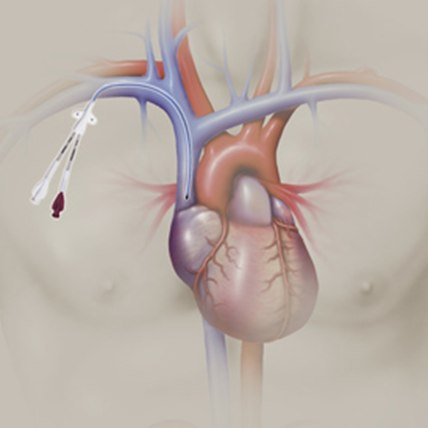
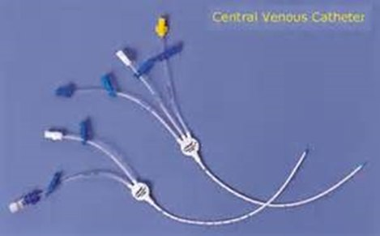
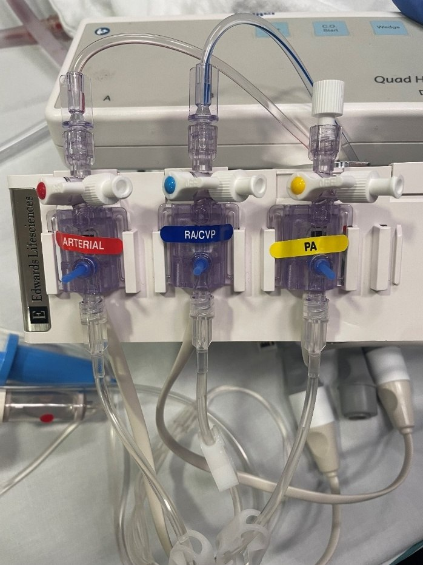
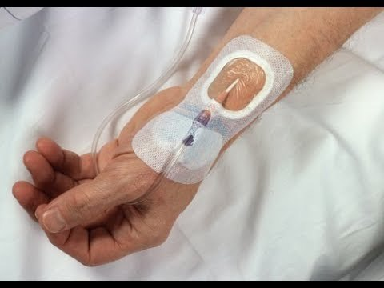
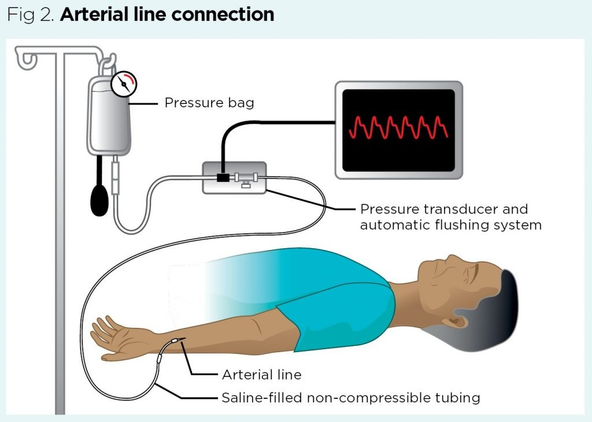
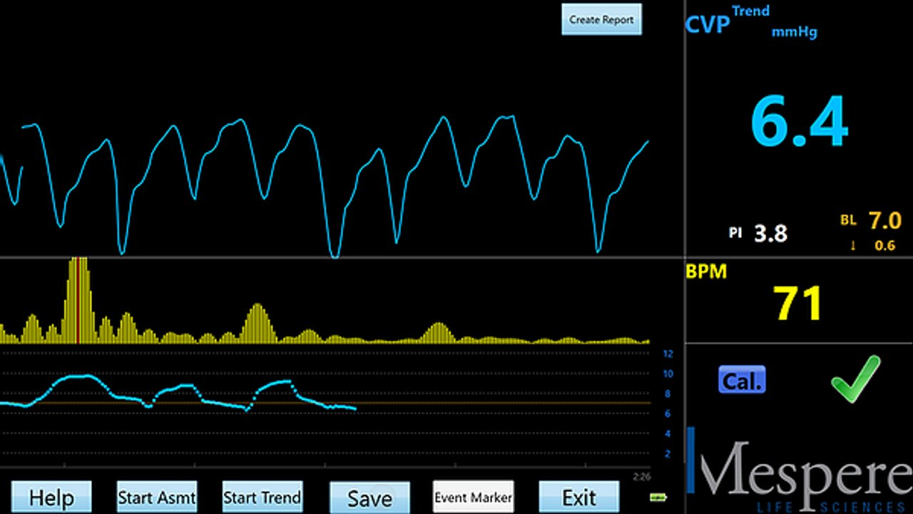
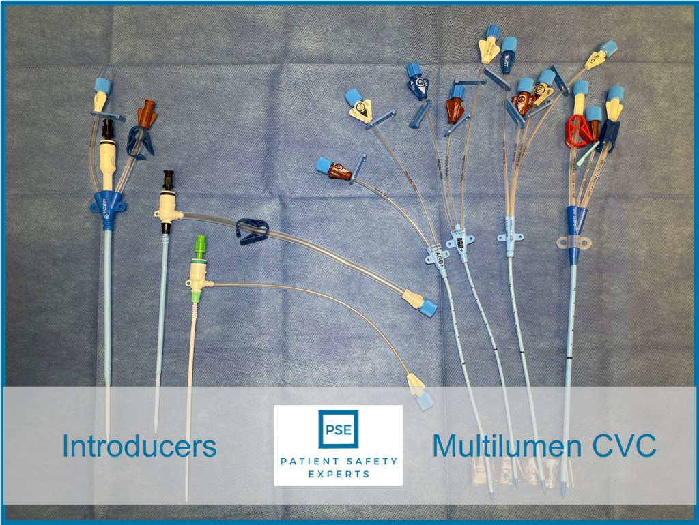
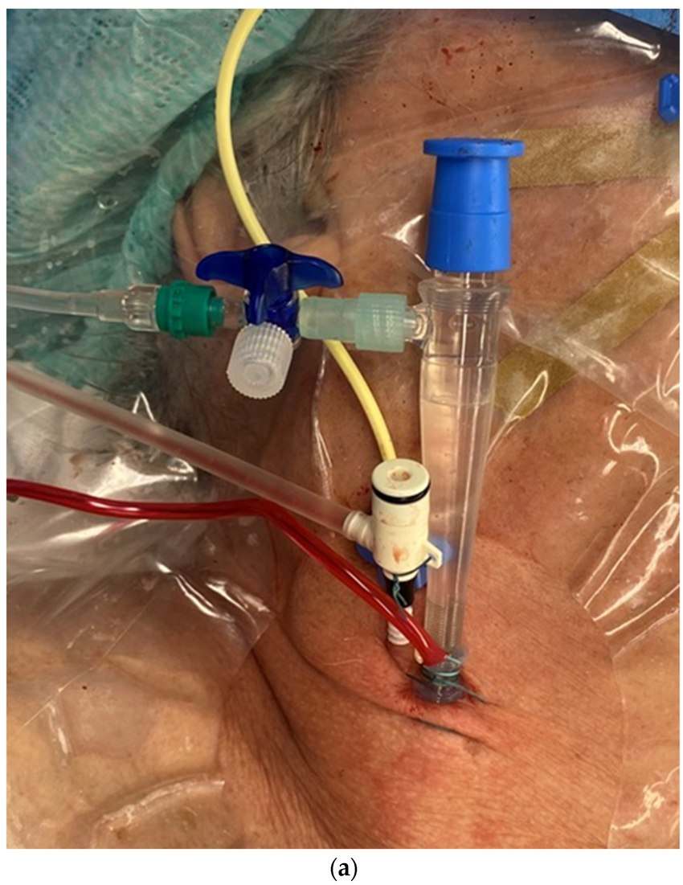
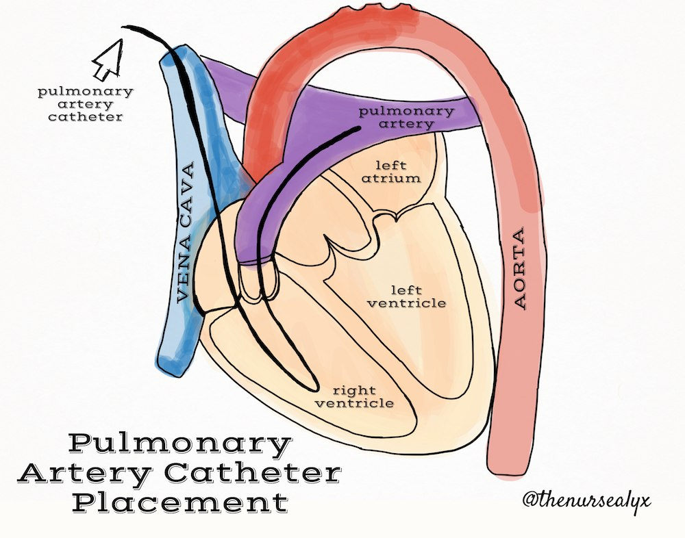
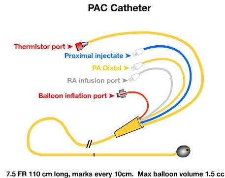

Day 4 · Topic 1
Hemodynamics
What Hemodynamics Are
Hemodynamics: the forces involved in the flow of blood as it circulates through the cardiovascular system. They control oxygen delivery and respond to oxygen demand.
Assessing Hemodynamic Stability
Look at the Patient: Signs of Perfusion and Oxygenation
- Level of consciousness: is there perfusion and oxygenation to the brain?
- Breathing: deep or shallow, rapid or slow? An increased work of breathing?
- Color: warm, pink and dry, or pale, really pale, green, blue? Look at the face and hands.
- Hands and feet: peripheral perfusion, so not always a great indicator. A face doing okay with very pale hands and feet still says something about perfusion and oxygenation.
- Warmth: warm, cool or cold? Diaphoretic or clammy?
- Pulses: weak, thready or strong? Appropriate for the scenario?
| Non-Invasive Measure | What to Know |
|---|---|
| Heart rate |
|
| Blood pressure |
|
| SpO2 and respiratory rate |
|
| ABG |
|
Cardiac Output
Heart Rate
- Set by: nerves and hormones.
- More than 60 to 100: a rate of 150, 120 or 40 each plays into cardiac output differently. What is the rhythm?
- AFib loses the atrial kick: about 20% of cardiac output, even rate controlled at 90. A very common dysrhythmia in the critically ill.
- Frequent PVCs decrease cardiac output.
Stroke Volume
- Preload: the blood volume.
- Afterload: the vascular resistance, usually called SVR (systemic vascular resistance), because it can be measured.
- Both are measured through invasive monitoring.
Invasive Monitoring
Why invasive: heart rate, blood pressure and respiratory rate are sometimes not enough to show what is happening at the vascular and tissue level. Invasive lines measure closer to the heart.
| Line | Where It Sits | What It Is For |
|---|---|---|
| Central line (central venous catheter) | In a vena cava, just outside the right atrium. Venous circulation. |
|
| Pulmonary artery (PA) catheter | A central line through the right atrium and right ventricle, into the pulmonary artery. Technically venous circulation. |
|
| Arterial line | In an artery. |
|


Managing the Equipment
| Equipment | What to Know |
|---|---|
| Pressure tubing |
|
| Transducer |
|
| Flush system |
|
| Location |
|
| Zeroing the transducer |
|

Arterial Line
| Feature | What to Know |
|---|---|
| Site |
|
| Continuous BP monitoring |
|
| Frequent ABGs |
|
Complications and Removal
| Complication | What to Know |
|---|---|
| Lost perfusion below the insertion |
|
| Bleeding |
|
| Kinks |
|
Before Removing an Arterial Line
- Check the bleeding risk: low platelets, a high INR, an elevated anti-Xa on a heparin drip. Any of these: high risk of bleeding at the site.
- Hold pressure until it stops: about 5 minutes by policy. The patient may hold it, while watched.


Central Venous Pressure (CVP)
CVP: What It Tells You
- Transduced from a central line, whose long tip sits right outside the right atrium.
- An indicator of central blood volume: a preload, or fluid volume, indicator. Low: low fluid volume. High: fluid volume excess. See the RAP below.
- Normal: 2 to 8 mmHg.
- General information on cardiac output, venous return and fluid status. Has a waveform too.
- Can be very inaccurate: if not transduced properly, if a lot is going on, if a lot of fluid runs through that line. Trend it and read it with the clinical picture.

Central Line Concerns
| Concern | What to Know |
|---|---|
| Infection (CLABSI) |
|
| Pneumothorax |
|
| Hematoma |
|


Pulmonary Artery (PA) Catheter
PA Catheter: What It Gives
- Formerly called a Swan-Ganz.
- The most invasive hemodynamic monitoring, and the best measure of what is going on with the heart.
- Several ports: some infuse, but most only transduce pressures.
- Measures: the RAP, cardiac output and cardiac index, PA pressures, SvO2. Each is below.
- Also gives: the SVR, a stroke volume estimate, and the most accurate temperature, right at the heart.


Right Atrial Pressure (RAP) and CVP
The RAP directly measures right ventricular preload: it sits in the right atrium. Normal: 2 to 8 mmHg, the same as the CVP, which is the indirect and less accurate reading.
Increased RAP or CVP
- Means: fluid volume excess, or increased pulmonary vascular resistance.
- Seen in: heart failure, pulmonary hypertension, cardiac tamponade, extreme fluid resuscitation.
- Treat: restrict fluid and sodium, diuretics such as furosemide, vasodilating medications. Vessels that are too tight can look like fluid overload, and vasodilating lowers the RAP.
Decreased RAP or CVP
- Means: fluid volume deficit, absolute or relative.
- Absolute: no fluid. Over-diuresis, acute hemorrhage, a lot of vomiting and diarrhea, burns.
- Relative: fluid in the body, but not in the vasculature. Third spacing such as ascites or peripheral edema, vasodilation from septic shock. It still does not help cardiac output or perfusion, so is sometimes treated the same.
- Treat: IV fluids, blood transfusions, vasoconstricting medications to tighten the vessels and use the fluid there.
PA Pressures and Wedge Pressure
PA pressures are read like a blood pressure: PA systolic over PA diastolic. They measure left and right heart pressures.
| Pressure | Normal | What It Reflects |
|---|---|---|
| PA systolic (PAS) | 20 to 30 mmHg | Peak pressure of the right ventricle ejecting its stroke volume: the pressure needed to open the pulmonic valve. Speaks more to the pulmonary system. |
| PA diastolic (PAD) | 4 to 12 mmHg | Resistance of the pulmonary vasculature, with the pulmonic valve closed and the tricuspid valve open. |
| Wedge pressure (PAOP) | 8 to 12 mmHg | The left ventricle's function and fluid status. Indirect, but the most accurate measure of them. Also called the pulmonary artery occlusive pressure, or the pulmonary artery or capillary wedge pressure. |
| Finding | Reflects | Seen In |
|---|---|---|
| Elevated PA systolic | Increased right ventricle afterload or pulmonary vascular resistance: lung problems | Pulmonary hypertension, lung disease, severe hypoxemia |
| Elevated PA diastolic | The left side of the heart not functioning well | Left-sided heart failure, myocardial infarction |
| Low PA diastolic | Inadequate venous return: low preload | Shock (very vasodilated), dehydration, fluid volume deficit |
Cardiac Output and Cardiac Index
| Measure | Normal | What It Is |
|---|---|---|
| Cardiac output (CO) | 4 to 8 L/min | The amount of blood pumped out by the ventricle every minute. Continuous cardiac output monitoring (CCO) through the PA catheter is the best measurement of it. |
| Cardiac index (CI) | 2 to 6 L/min. Goal: above 2. | Cardiac output individualized to body surface area. Usually the one used. |
Cardiac output is more than preload or stroke volume: it takes in volume status, contractility (the squeeze) and afterload together.
Systemic Vascular Resistance (SVR)
SVR: What It Measures
- The resistance the left ventricle must overcome to open the aortic valve and eject blood into the aorta: the afterload measurement.
- Not blood pressure: vessel resistance. Are the vessels open, clamped down tight, or appropriate?
- Normal: 800 to 1200.
Elevated SVR
- Ask: is it a positive or a negative compensation?
- Hypovolemia, in a "healthy" patient: positive. Narrowed vessels move the fluid there out to the peripheral tissues more effectively, as in anyone dehydrated. Treat the cause: give fluid.
- Cardiac failure: negative. Compensatory too, but the heart fights a higher afterload, which worsens the failure. Give meds to decrease the SVR.
Decreased SVR
- Systemic vasodilation: the vessels are wide open.
- Medications: vasodilators, given on purpose or not.
- Shock states, which vasodilate the vessels.
Mixed Venous Oxygen Saturation (SvO2)
SvO2: What It Measures
- Oxygen saturation in the pulmonary artery: the average venous oxygen saturation of the whole body, so "mixed venous".
- The pulmonary artery is the last stop before hemoglobin is resaturated in the lungs, so the lowest oxygen level. SvO2 is the oxygen that was not used.
- Normal: 60 to 75%, not near zero. The tissues use only about 25 to 40% of the oxygen in the blood.
- Shows oxygen supply and demand.
- ScvO2: essentially the same, from a central line, with slightly different normals.
Higher SvO2 (Above 75%)
- Increased O2 supply: the supplemental oxygen is known already, so not usually the reason.
- Decreased O2 demand: usually. Sedated and paralyzed, the tissues are not taking up oxygen.
- Inability to extract O2 at the tissues: especially in the critically ill. In acidosis, such as a pH of 7.1, the cells cannot extract oxygen as well.
Lower SvO2
- Decreased O2 supply: low hemoglobin (check the H&H), low cardiac output, low SaO2.
- Increased O2 consumption: the most common in the critically ill. Infection, trauma, shivering after anesthesia, agitation and restlessness.
- Example: a cardiac index of 1.5 gives an SvO2 of 40 to 50%. Without the cardiac output to compensate, the tissues take more oxygen.